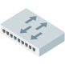

🚀 Introducción
ONetMap (Open Network Map) es un editor basado en canvas donde puedes construir diagramas de red mediante nodos, enlaces y agrupaciones visuales.
- Toolbar izquierda: herramientas
- Canvas central: área de trabajo
- Inspector derecho: propiedades
- Barra superior: gestión del proyecto
💡 Flujo típico
1. Añades dispositivos → 2. Los conectas → 3. Organizas con áreas → 4. Ajustas propiedades → 5. Exportas
🧰 Barra de herramientas
Grupos principales
- Dispositivos
- Relaciones
- Herramientas
- Vista
⚙️ Herramientas clave
- Selección: interactuar
- Texto: anotaciones
- Eliminar: borrar elementos
- Reasignar ID: reorganiza identificadores
🖥️ Dispositivos
Incluye:
- Routers, switches, APs
- PCs, servidores, NAS
- Impresoras, teléfonos IP
- Cloud (enlace entre hojas)
💡 Uso del cloud
Permite conectar distintas hojas entre sí.
🔗 Enlaces
Tipos
- Ethernet
- Inalámbrico
- WAN
Configuración
- Puerto origen/destino
- VLAN
- Modo TRUNK / ACCESS
⚠️ Reglas
No se puede conectar un nodo consigo mismo.
📦 Áreas
- Agrupan dispositivos
- Redimensionables
- Con o sin color
💡 Ejemplo
Separar redes por departamentos o edificios.
📝 Texto
- Click para crear
- Doble click para editar
- Enter para guardar
🖱️ Selección
- Click → seleccionar
- Arrastrar → mover
- Delete → eliminar
⚙️ Inspector
Panel derecho con propiedades dinámicas.
Nodos
- Nombre, texto
- Ángulo
- Opacidad
- Metadata
Enlaces
- VLAN
- Puertos
- Dirección
📄 Hojas
- Múltiples redes en un archivo
- Selector superior
- Interconexión con cloud
💾 Importar / Exportar
Exportar
- JSON
- GZIP
- PNG
- TXT
Importar
- Proyecto completo
- Como hoja nueva
🔍 Visualización
- Zoom con rueda o slider
- Rejilla opcional
- Mostrar puertos
- Cambio de iconos
🎨 Iconos
ONetMap utiliza un conjunto de iconos estandarizados para representar dispositivos, conexiones y elementos de red. Estos iconos combinan recursos reconocidos del sector junto con adaptaciones personalizadas para mejorar la claridad visual.
📚 Fuentes de iconos
-
Vista simbólica: Cisco Network Topology Icons 3015 -
Ver colección
Conjunto oficial de Cisco ampliamente utilizado en documentación profesional y diagramas de infraestructura de red.


-
Vista realista: Basic Network -
Ver colección
Iconos esqueumórficos, orientados al diseño de diagramas rápidos y de fácil interpretación.


-
Standardized Network Diagramming Symbols (SANDS) -
Paper original
|
Tesis relacionada
Propuesta académica para la estandarización de símbolos en diagramas de red, enfocada en consistencia semántica y claridad en la representación.

🛠️ Personalización
- Adaptación de estilos para coherencia visual dentro de la herramienta
- Simplificación de algunos iconos para mejorar legibilidad en zoom bajo
- Unificación de tamaños y proporciones
- Creación de iconos propios para elementos específicos (como nodos cloud entre hojas)
⌨️ Atajos
- Ctrl + C: clonar
- Delete: eliminar
- Esc: cancelar herramienta
- Enter: confirmar texto